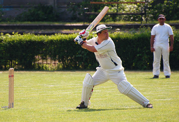
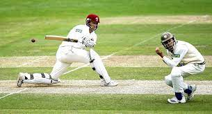

A krikettmérkőzések 100-150 méter átmérőjű ovális pályán zajlanak. A pálya közepe a 20 méter hosszú és 3 méter széles dobósáv, ott történnek az igazán fontos dolgok. A mérkőzések során két 11 fős csapat méri össze az erejét, a csapat legfontosabb tagja a kapitány. A mérkőzéseket pénzfeldobás előzi meg. A pénzfeldobást megnyerő kapitány eldönti, hogy dobással, vagy ütéssel kezdi a mérkőzést. Még a sorsolás előtt a kapitányok kijelölik az ütősorrendet, ettől azonban a mérkőzés folyamán el lehet térni. Kezdéskor az ütősorrendben első 2 helyre nevezett játékos elfoglalja a helyét a dobósáv két végén található kapunál. Az egyik ütőjátékos aktív, a másik passzív. Az aktív ütőjátékos a kapu előtt foglal helyet, míg a passzív inkább a kapu mellett. ( De mi is az a kapu, és hogyan néz ki? A kaput a dobósáv végén leszúrt 3 karó,és a karókra helyezett pálcika lkotja. A kapu szélessége 23cm, magassága 71cm, a pálcikák hossza kb. 10 cm. A labda bőrbevonatú parafa, súlya 155-165g, kerülete 22-23mm. Az ütő 965mm hosszú és 108 mm széles.
 